math and DL for implicit representations + neural volume rendering
隐式表征+神经体积渲染 有关的数学与DL类方法
- resources
- Neural Volume Rendering
- performance / timing
- generative / category / GAN
- dynamic / deform
- compositional
- encoder
- relighting
- pose estimation
- basics
resources
-
对于neural volume rendering能够取得如此巨大成功(i.e. high fidelity details, easy and fast to converge)的一个possible explanation
- from Neural Volumes: Learning Dynamic Renderable Volumes from Images
-
[We] propose using a volumetric representation consisting of opacity and color at each position in 3D space, where rendering is realized through integral projection. During optimization, this semi-transparent representation of geometry **disperses gradient information along the ray of integration**, effectively widening the basin of convergence, enabling the discovery of good solutions.
Neural Volume Rendering
"NeRF: Representing Scenes as Neural Radiance Fields for View Synthesis"
[ ECCV2020(Oral) ] [web] [paper] [code(tf)] [code(pytorch)] [code(pytorch)(re-implement)] [ 
UCB, UCSD ] [ 
Google ]
[ Ben Mildenhall, Pratul P. Srinivasan, Matthew Tancik, Jonathan T. Barron, Ravi Ramamoorthi, Ren Ng ]
[ NeRF ]
Click to expand
-
Motivation
- 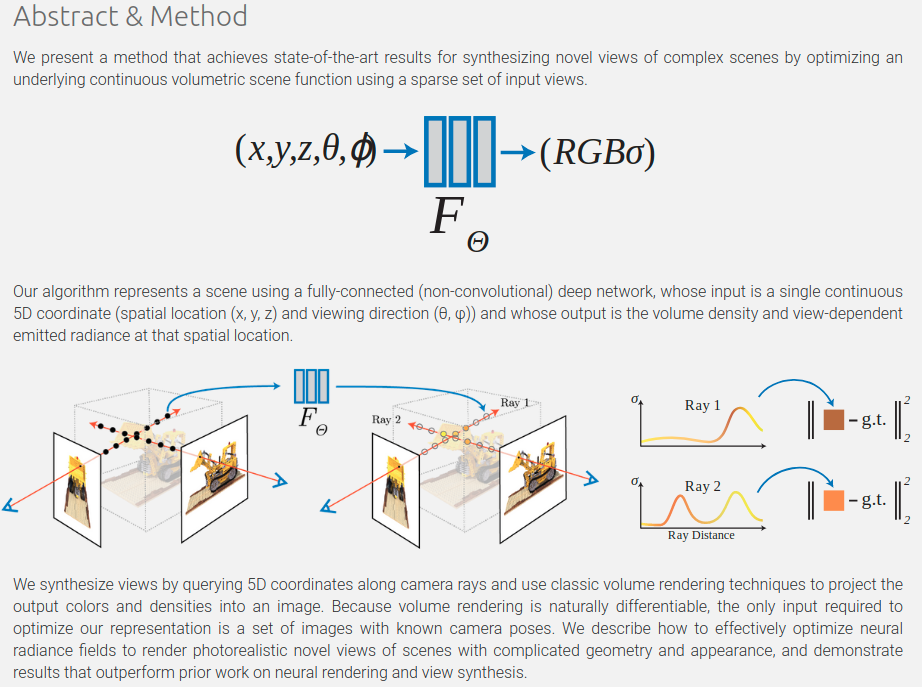
-
Review
- 颜色值由ray上的积分函数构成：
-
\[C(r)=\int_{t_n}^{t_f} T(t) \; \cdot \; \sigma(r(t)) \; \cdot \; c(r(t),d) \quad {\rm d}t\]
- 从near平面积分到far平面
- 其中，\(T(t)=\exp(-\int_{t_n}^t \sigma(r(s))) \; {\rm d}s\)
- 注意，这里是从near平面开始，累积\(\sigma\)积分的负数的指数；这意味着，如果已经经过了一些\(\sigma\)值很大的值，ray后的点累积值也会很大，T(t) 值就会很小了
- 这里一定程度上已经cover了遮挡的情况
- 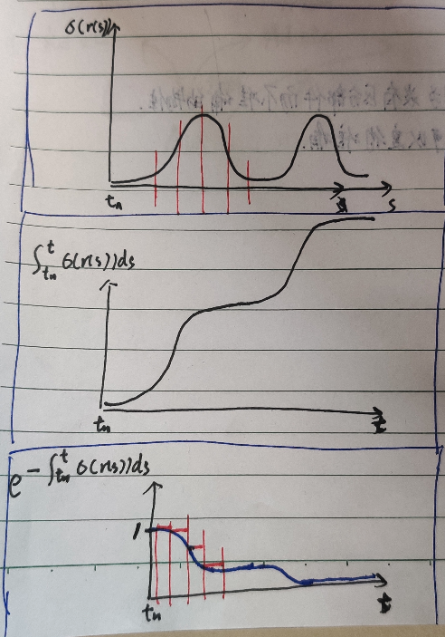
-
\[C(r)=\int_{t_n}^{t_f} T(t) \; \cdot \; \sigma(r(t)) \; \cdot \; c(r(t),d) \quad {\rm d}t\]
- 颜色值由ray上的积分函数构成：
"Neural Volumes: Learning Dynamic Renderable Volumes from Images"
[ 0000 ] [[paper]] [[code]] [ 
University ] [ 
company ]
[ xxxx ]
[ abcd ]
Click to expand
- Motivation
performance / timing
- Learned Initializations for Optimizing Coordinate-Based Neural Representations
"DeRF: Decomposed Radiance Fields"
[ CVPR2021 ] [paper] [[code]] [web] [ 
University, SFU, University of Toronto ] [ 
Google ]
[ Daniel Rebain, Wei Jiang, Soroosh Yazdani, Ke Li, Kwang Moo Yi, Andrea Tagliasacchi ]
[ voronoi space decomposition ]
Click to expand
-
Motivation
- 对于NeRF这种研究，在提高网络深度、大小时，有diminishing returns（减小的回报）
- 因此，instead of 提高单个网络深度、大小，本篇把空间分成几个voronoi cell，对应几个NeRF，来学习
- 因为是空间分区的network，因此无论分多少部分，Infer时间是几乎不变的
- voronoi空间分解非常合适，因为被证明与Painter’s Algorithm 兼容，可以高效GPU渲染
- 对于现实世界场景，在相同的渲染质量情况下，比NeRF高效3倍以上
-
Overview
- 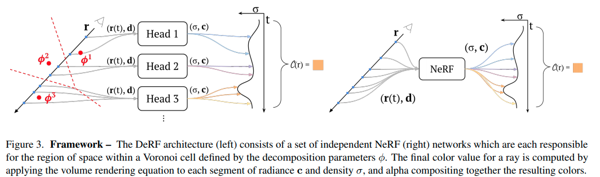
"Neural Sparse Voxel Fields"
[ NeurIPS2020 ] [paper] [code] [web] [ 
MPI, NUS ] [ 
Facebook ]
[ Lingjie Liu, Jiatao Gu, Kyaw Zaw Lin, Tat-Seng Chua, Christian Theobalt ]
[ NeRF, octree voxels fields ]
Click to expand
-
review
- 兼顾精度、速度？
- 既然是利用形状/点云信息，加快query时的速度，那可否利用SDF？
- 这种加速，相当于额外存储一下空间中哪些位置占用低
-
Motivation
- 现有的方法，由于网络容量/寻找和scene geometry的精确intersection有困难，目前的很多方法都是blurry results
- 提出一种新的表征，用octree结构的voxels来each 存local feature
这样在采样时就可以跳过无关的voxels，比NeRF快10倍
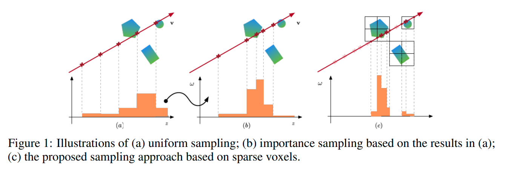 - 至于每个pixel的feature，渲染结构与NeRF类似
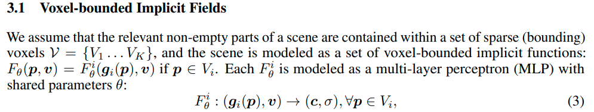
-
Overview
- self-pruning
把占用小于阈值的网格直接剪枝掉
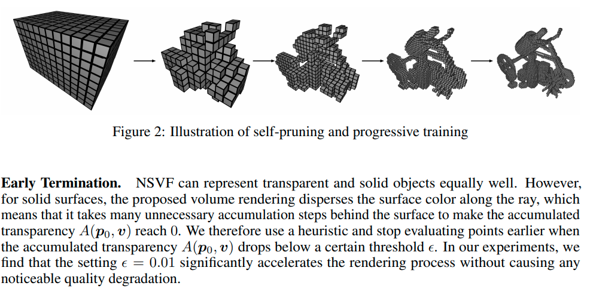 - 一个voxel上的feature有顶点补间得来
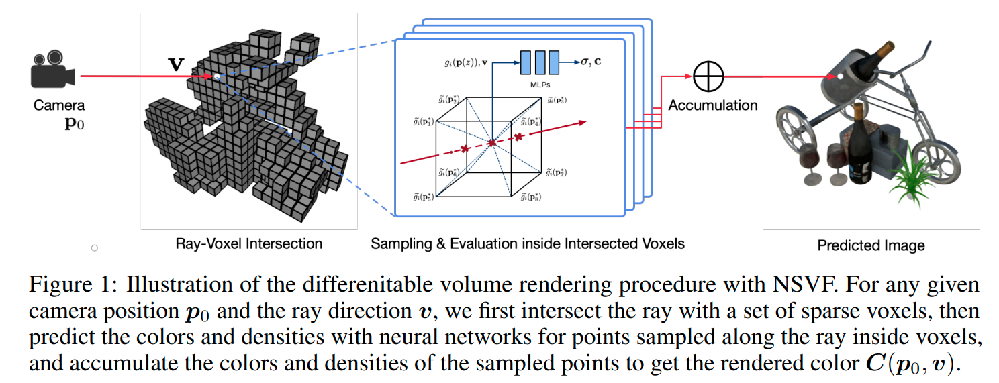
- self-pruning
-
results
- 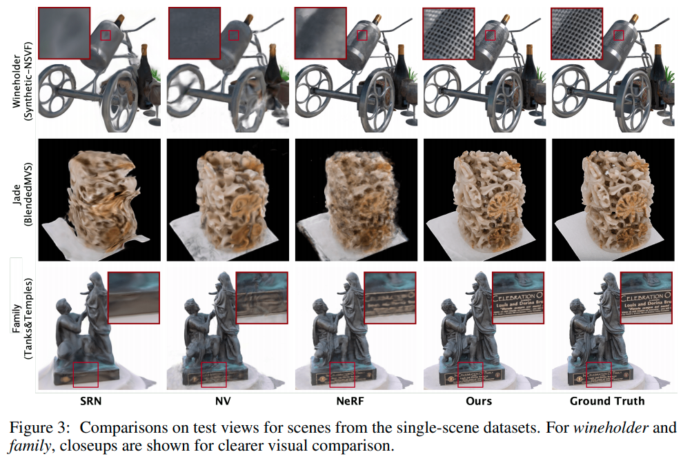
- 因为用的是显式的sparse voxel 表征，可以轻松用于scene composition
- 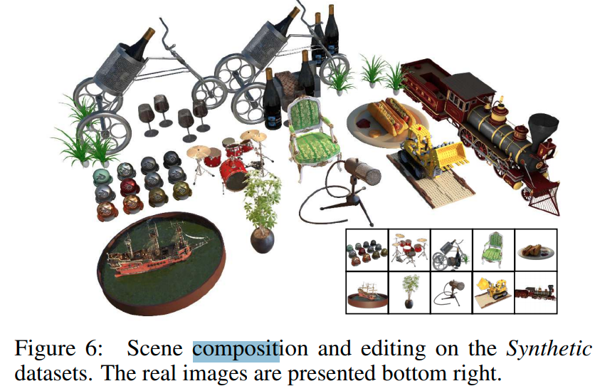
- 还可以在
ScanNet上直接进行尝试：首先用注册后的深度图提取点云
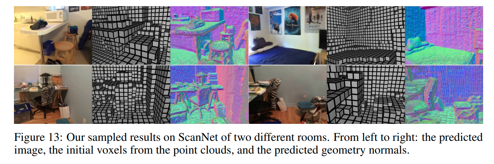 - 还可以做scene editing：因为用的是显式的voxel
- 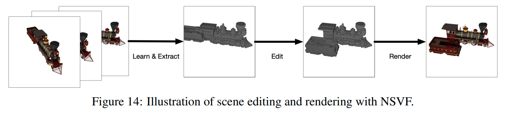
"AutoInt: Automatic Integration for Fast Neural Volume Rendering"
[ arXiv2020 ] [paper] [ 
Stanford ]
[ David B. Lindell, Julien N. P. Martel, Gordon Wetzstein ]
[ AutoInt ]
Click to expand
-
Motivation
- 初版NeRF需要离散采样数值积分，计算非常费时：millions of rays，每个ray上hundreds of forward passes，用蒙特卡洛采样来近似积分
- 本文用了一种快速自动积分的算法，应对这种对一个隐式神经场的积分
- training: grad net来表征多视角图片
- testing: integral net来迅速evaluate per-ray integrals
- 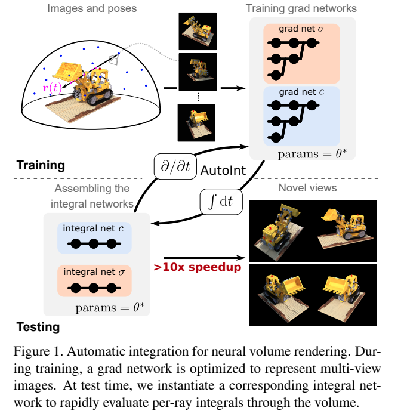
-
overview
- 把grad network的parameters reassembled to form integral networks
- 用一个sampling network 预测ray上的piecewise sections的位置，用于计算定积分
- 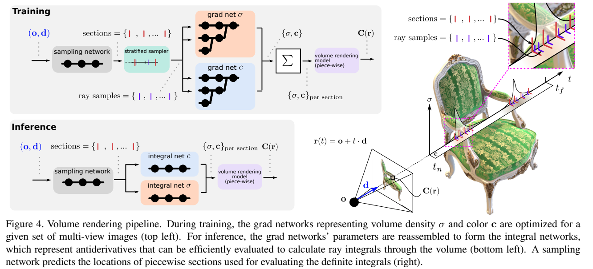
- neural volumetric rendering
- automatic integration支持高效地用closed-form solution来evaluate 定积分
- 不过volume rendering不能直接应用AutoInt，因为包含嵌套的积分：ray上的radiance加权 累积transmittance 以后的积分
- 因此，把这个积分近似为piecewise sections来用AutoInt高效地积分
- 将
- \[\boldsymbol{\rm C}(\boldsymbol{\rm r})=\int_{t_n}^{t_f} T(t) \; \cdot \; \sigma(\boldsymbol{\rm r}(t)) \; \cdot \; c(\boldsymbol{\rm r}(t),\boldsymbol{\rm d}) \quad {\rm d}t\]
- \[T(t)=\exp(-\int_{t_n}^t \sigma(\boldsymbol{\rm r}(s))) \; {\rm d}s\]
- 近似为
- \[\tilde{\boldsymbol{\rm C}}(\boldsymbol{\rm r})=\sum_{i=1}^N \overline{\sigma}_i \overline{\boldsymbol{\rm c}}_i \overline{T}_i, \qquad \overline{T}_i=\exp(-\sum_{j=1}^{i-1}\overline{\sigma}_j)\]
- 其中\(\overline{\sigma}_i=\delta_i^{-1}\int_{t_i-1}^{t_i}\sigma(t)\;{\rm d}t, \qquad \overline{\boldsymbol{\rm c}}_i = \delta_i^{-1} \int_{t_i-1}^{t_i}\boldsymbol{\rm c}(t)\;{\rm d}t\)
- 每段的\(\overline{\sigma}_i\)由这段上的\(\sigma(t)\)积分求出，每段的\(\overline{\boldsymbol{\rm c}}_i\)由这段上的\(\boldsymbol{\rm c}(t)\)积分求出
- 这里用AutoInt近似
- 解释\(\overline{T}_i=\exp(-\sum_{j=1}^{i-1}\overline{\sigma}_j)\)：每段的累积transimittance\(T(t)\)则由这段之前的那些段的累加\(\overline{\sigma}_i\)的负指数幂近似
- 这里是真正的数值近似，把一段上的所有T(t)都用这段起始的T(t)近似
- 每段的\(\overline{\sigma}_i\)由这段上的\(\sigma(t)\)积分求出，每段的\(\overline{\boldsymbol{\rm c}}_i\)由这段上的\(\boldsymbol{\rm c}(t)\)积分求出
- 由于目前的autoint是两阶段的，训练很慢；本篇用了一个pytorch custom implementation of AutoDiff
"NeRF++: Analyzing and Improving Neural Radiance Fields
[ arXiv2020 ] [paper] [code] [ 
Cornell Tech ] [ 
Intel ]
[ Kai Zhang, Gernot Riegler, Noah Snavely, Vladlen Koltun ]
[ abcd ]
Click to expand
 |
 |
|---|---|
-
Motivation
- 面对unbounded scenes时，用一种球内 / 球外\(\frac {1}{r}\)的参数化来更好的处理foreground / background
generative / category / GAN
"GRAF: Generative Radiance Fields for 3D-Aware Image Synthesis"
[ NeurIPS2020 ] [paper] [supp] [code] [web] [ 
MPI ]
[ Katja Schwarz, Yiyi Liao, Michael Niemeyer, Andreas Geiger ]
[ abcd ]
Click to expand
-
Motivation
- 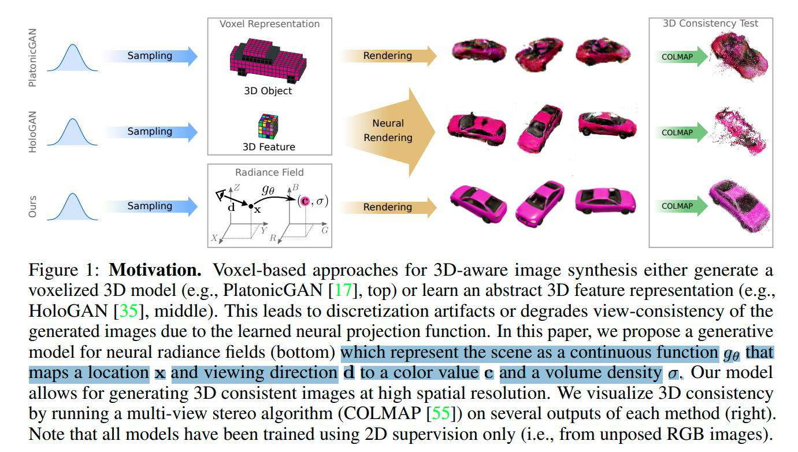
-
While 2D generative adversarial networks have enabled high-resolution image synthesis, they largely lack an understanding of the 3D world and the image formation process.
Thus, they do not provide precise control over camera viewpoint or object pose.
因为2D GAN缺少对3D世界的理解；缺少图像生成过程的理解，所以不能提供对于camera viewpoint和物体pose的精确控制。
- 使用连续表征neural radiance filed
- 从location x, view direction d映射到color c 和 体素密度\(\sigma\)
- 数据集使用unposed RGB images
"pi-GAN: Periodic Implicit Generative Adversarial Networks for 3D-Aware Image Synthesis"
[ arXiv2020 ] [paper(compressed)] [paper] [[code]] [code-nonofficial] [web] [ 
Stanford ]
[ Eric R. Chan, Marco Monteiro, Petr Kellnhofer, Jiajun Wu, Gordon Wetzstein ]
[ SIREN-style ]
Click to expand
-
Review
- 主要对标、高度对标 GRAF
-
Motivation
- StyleGAN类似的noise输入方式（
mapping network） + SIREN的周期性激活函数（sinusoidal activation） - 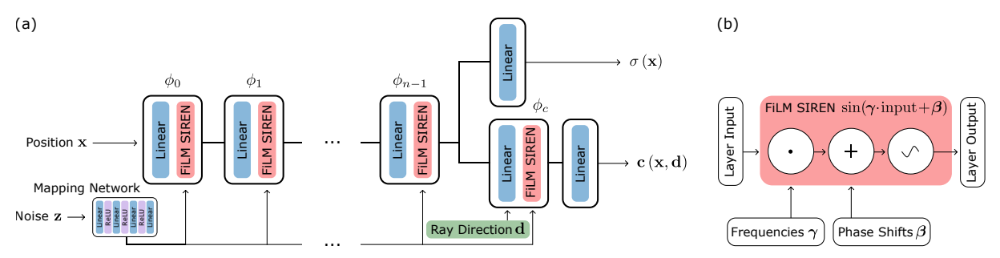
- StyleGAN类似的noise输入方式（
-
Losses
- discriminator
- simple ProgressiveGA-like convolutional discriminator;
- discriminator
-
Main contributions 主要技术贡献
-
FiLM：另外一种input noise使用方式：feature-wise linear modulation- 就是首先把 latent 通过mapping变成 \(\gamma\)和\(\beta\)，然后施加到SIREN的激活函数处
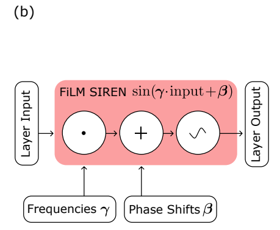 - 过去的ReLU-based 方法，一般使用concat来condition input noise
- 作者观察到，对于
SIREN这种周期性的激活函数来说，condition-by-concatenation是 sub-optimal的 - 作者提出，使用 mapping network 进行
feature-wise linear modulation来 conditionSIREN中的那些Layer- [47] arXiv 2017, Film: Visual reasoning with a general conditioning layer.
- [8] Distlll 2018, Feature-wise transformations. [link]
- 就是首先把 latent 通过mapping变成 \(\gamma\)和\(\beta\)，然后施加到SIREN的激活函数处
-
progressive training
- 遵循progressiveGAN的方式
- 先在 低分辨率、大batch size训练，让generator专注于生成 coarse shapes；
- 然后逐渐增加图像分辨率、给dis添加新层、来辨别fine details
- 32x32 -> 64x64 -> 128x128
- 实践中发现，这样的 progressive growing的策略可以在刚开始训练时allow for更大的batch size、allow for higher throuput in images per iteration，对于稳定训练、提速训练有帮助，helped ensure quality and diversity
- [23] ICLR2018, Progressive growing of GANs for improved quality, stability, and variation.
- 不需要像progressiveGAN那样增长generator的结构，对于nerf-based生成器，只需要progressively增加采样射线的分辨率即可
- 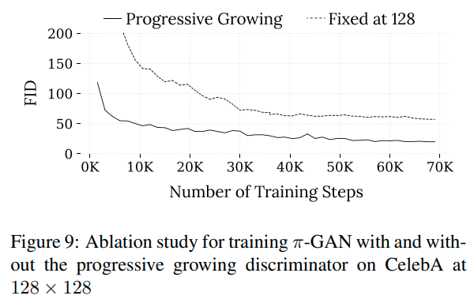
-
-
Results
- 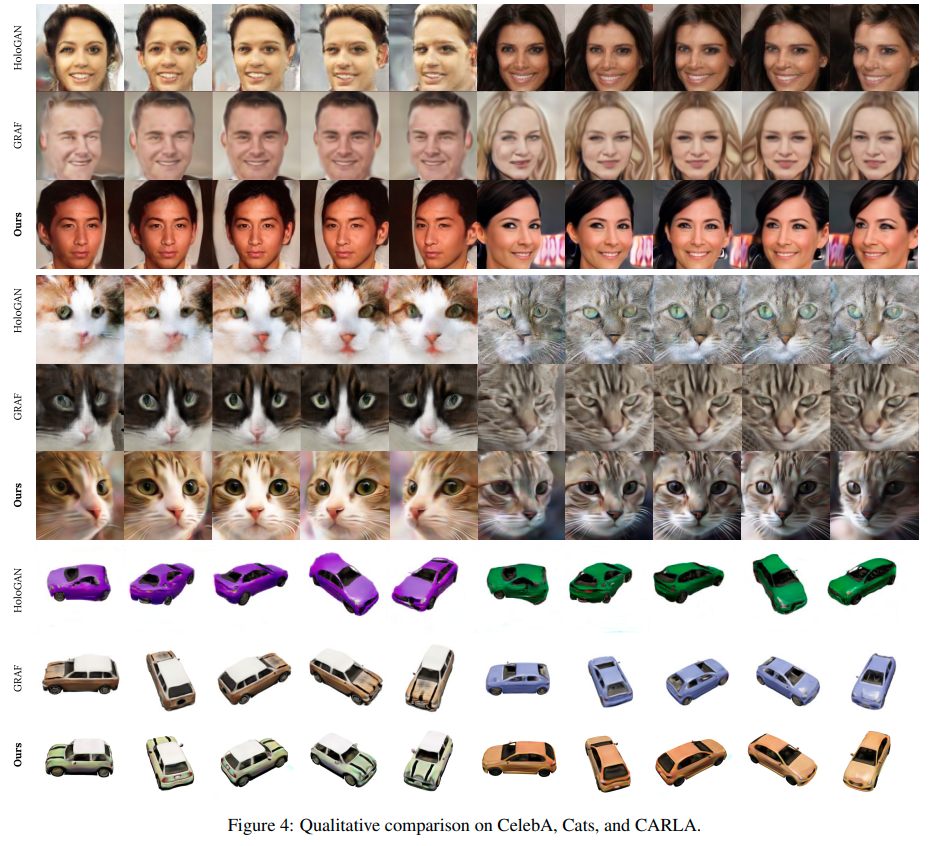
dynamic / deform
(nerfies, D-NeRF) "Deformable Neural Radiance Fields"
[ CVPR2021 ] [paper] [code] [web] [ 
University of Washington ] [ 
Google ]
[ Keunhong Park, Utkarsh Sinha, Jonathan T. Barron, Sofien Bouaziz, Dan B Goldman, Steven M. Seitz, Ricardo Martin-Brualla ]
[ deformable NeRF ]
Click to expand
-
Motivation
- 为NeRF采集的图片中的物体可以变形
-
Overview
- 首先从observation space加上一个变形latent code映射到canonical space，然后再canonical space下进行NeRF的操作
- 这样通过变形latent code就可以捕捉到物体的变形
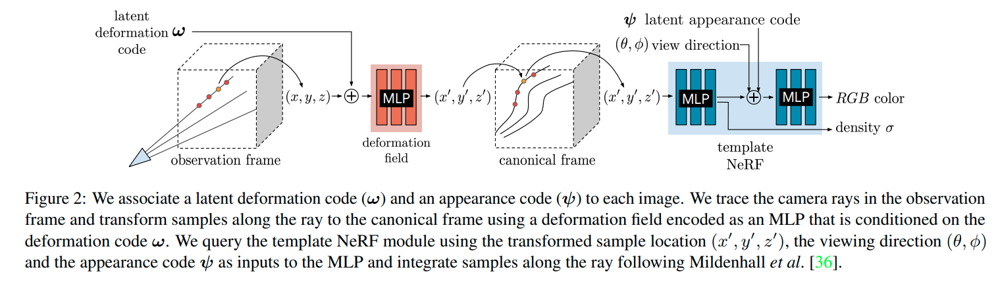
- Elastic Regularization 弹性正则化
- 由于deformation field 引入了额外的ambiguities，导致
under-constrained optimization欠约束最优化问题，带来不好的结果和artifacts
需要引入先验 - 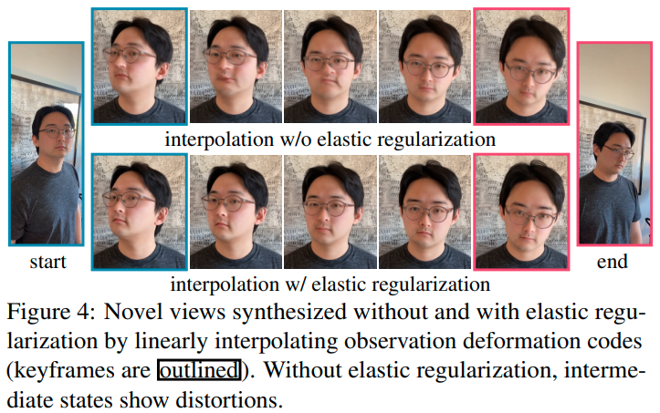
- 在几何处理和图形学仿真领域，建模非刚体变形时，常常使用弹性能量
elastic enegies来建模local deformations from a rigid motion；在视觉领域也有利用elastic energy来重建、tracking非刚体的场景和物体；因此使用类似概念 - 对本篇的deformation field T来说，一个点\(\boldsymbol{\rm x}\)处的mapping(从observation frame到canonical frame)的
Jacobian\(\boldsymbol{\rm J}_T(\boldsymbol{\rm x})\)描述了这个点处的mapping的best linear approximation -
\[L_{\text{elastic}} = \| \log \boldsymbol{\Sigma} - \log \boldsymbol{\rm I} \|_F^2=\|\log \boldsymbol{\Sigma}\|_F^2\]
- 其中，考虑把\(\boldsymbol{\rm J}_T\)进行
singular value decomposition奇异值分解：\(\boldsymbol{\rm J}_T=\boldsymbol{\rm U}\boldsymbol{\rm \Sigma}\boldsymbol{\rm V}^T\) - 则\(\boldsymbol{\Sigma}\)即为变形的主拉伸；
- 选择\(\log{\boldsymbol{\Sigma}}\)矩阵对数是因为对于相同比例的
contraction和expansion有相同的weight - 这里就是惩罚变形的拉伸部分、非刚性形变部分，鼓励局部是刚性形变
- 其中，考虑把\(\boldsymbol{\rm J}_T\)进行
- 由于deformation field 引入了额外的ambiguities，导致
"D-NeRF: Neural Radiance Fields for Dynamic Scenes"
[ arXiv2020 ] [paper] [[code]] [web] [ 
University ] [ 
company ]
[ Albert Pumarola, Enric Corona, Gerard Pons-Moll, Francesc Moreno-Noguer ]
[ abcd ]
Click to expand
- Motivation
<NSFF>"Neural Scene Flow Fields for Space-Time View Synthesis of Dynamic Scenes"
[ CVPR2021 ] [paper] [supp] [code] [web] [ 
Cornell Tech, ] [ 
Adobe ]
[ Zhengqi Li, Simon Niklaus, Noah Snavely, Oliver Wang ]
[ abcd ]
Click to expand
- Motivation
<video-nerf>"Space-time Neural Irradiance Fields for Free-Viewpoint Video"
[ arXiv2020 ] [paper] [[code]] [web] [ 
Cornell Tech, Virginia Tech ] [ 
Facebook ]
[ Wenqi Xian, Jia-Bin Huang, Johannes Kopf, Changil Kim ]
[ abcd ]
Click to expand
- Motivation
<nerflow>"Neural Radiance Flow for 4D View Synthesis and Video Processing"
[ arXiv2020 ] [paper] [[code]] [web] [ 
MIT, Stanford ]
[ Yilun Du, Yinan Zhang, Hong-Xing Yu, Joshua B. Tenenbaum, Jiajun Wu ]
[ abcd ]
Click to expand
- Motivation
<NR-NeRF> "Non-Rigid Neural Radiance Fields: Reconstruction and Novel View Synthesis of a Deforming Scene from Monocular Video"
[ arXiv2020 ] [paper] [code] [web] [ 
MPI] [ 
Facebook ]
[ Edgar Tretschk, Ayush Tewari, Vladislav Golyanik, Michael Zollhöfer, Christoph Lassner, Christian Theobalt ]
[ rigidity score, divergence loss, dynamic/deforming scenes decoupling, canonical NeRF volume, spatial deformation ]
Click to expand
- 贡献/结论：
- 消费者级的相机就足够合成简单、短时场景的让人信服的bullet-time videos ；单目视频的free viewpoint rendering，将场景解耦为静态表征和变形
- 表征允许视野、时间之间的相关性估计
- 提供场景中每个点的
rigidity score刚性评分；一个rigidity network来吧场景分为非刚体前景和刚体背景，没有直接监督信号；是一种空间场中的连续加权和，不是显著的离散划分
-
Motivation
- 用非刚体（可形变的）nerf来表征一个包含动态可变物体的视频
通过ray bending来重建一个一般的非刚体场景的NeRF - 输入一张正在变形的物体的RGB图片，学到它的几何和外观表征，并且可以重建任何timestep下的novel camera view下的物体图片
- task：
free viewpoint rendering自由视野渲染，针对dynamic scenes动态场景（随时间变化的场景）- 过去需要多视角的captures，但是这样的多视角方案是昂贵的、繁琐的
- 希望用户只用消费者级的相机，monocular
- 方法不仅适用于现在拍的视频，还适用于过去久远以前拍的视频，制造
immersive更有沉浸感的体验
-
monocular video for dynamic/deforming scenes是一个严重under-constrained欠约束问题- 过去的方法限制在单物体类别，如人体
- 过去的方法只重建非刚性物体的
geometry形状/几何，不关注外观

- 用非刚体（可形变的）nerf来表征一个包含动态可变物体的视频
-
overview
- 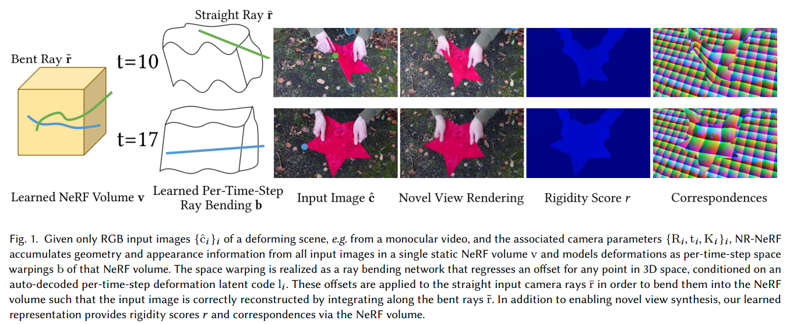
- 并没有显式的cover时间信息
- 把非刚体场景表征为两个components的组合，并且在观测上一起训练；整个方法都是自监督/无监督的
- 一个canonical NeRF volume，表达几何与外观
- 没有直接supervised，是场景的static表征
- 场景的变形
- 使用估计的场景变形把canonical NeRF volume变形到每张图片
-
 由于场景的
由于场景的vometric nature，本篇选择的是space deformations，而不是mesh-based的方法的surface deformations表面变形- 变形的是entire space，和camera view无关；因此可以做novel view synthesis
-
场景变形表征为ray bending；是互补的路线，instead of 从canonical volume变形到直线camera ray上，本篇是从camera ray上的点变形到canonical volume中
- 笔者评价：前面两点和DIF, DIT两篇论文的设定都十分类似
- ray bending 用MLP参数化
- 输入射线上的点坐标；输入每张图片(per-time-step)的一个latent code
- 变形code是每帧一个code
- 从视频场景的几何中解耦变形是一种under-constrained问题；
- 在canonical volume中的每一个点分配一个刚性评分；使得变形不影响场景的静态区域
- 这个同样也是联合训练，没有直接监督信号
- 引入sparsity regularizer作为软约束
- 加权了；主要鼓励在visible, occupied regions的sparsity
- 引入local shape preserving regularizer，试图保留变形场景的局部volume，通过最小化变形的
divergence散度- 加权了；hidden regions则被散度正则化约束
- 在canonical volume中的每一个点分配一个刚性评分；使得变形不影响场景的静态区域
- 一个canonical NeRF volume，表达几何与外观
- NeRF：去掉了view-depend 效应的NeRF
-
deformation model 变形的模型：ray bending / space warping
- 回归空间中一点在变形code condition下的offset：即，是
displacement vector field估计的是位移向量场函数- \((c,o)=v(x+b(x,l_i))\)，其中\(b(x,l_i)\)是变形后的在canonical space下的坐标，\(l_i\)是变形code，\(v\)是canonical NeRF函数
- 把每条直线\(\overline{r}\)变形后的版本表示为\(\tilde{\rm r}_{l_i}(j)=\overline{\rm r}(j)+b(\overline{\rm r}(j), l_i)\)
-
rigidity network刚性网络- 实践中发现场景的刚性部分没有被充足地约束；
- 将\(b(x,l_i)\)表达为一个raw offset + rigidity mask：\(b(x,l_i)=r(x)b'(x,l_i)\)
- 想要防止在场景中的刚性区域也变形，因此这些地方刚性mask \(r(x)=0\)，而在非刚性区域\(r(x)\gt 0\)
- 这使得b能够更专注于场景中的非刚性区域
-
笔者评价：
- 这里的思路和DIF论文中的位置改变函数和标量场改变函数有些类似；整个场景并不都有变形，在DIF中的情况是物体有时候会有
structure discrepancy在结构上的不同、无法用变形建模，而在本篇中的情况是整个空间区域中只有一部分是非刚体； - 思路都是类似的，instead of 直接对整个场景变形，多用一个量来反馈一些其他的非变形的信息
- 这里的思路和DIF论文中的位置改变函数和标量场改变函数有些类似；整个场景并不都有变形，在DIF中的情况是物体有时候会有
- 这个rigidity network同canonical nerf、变形code变形网络一起，都是jointly learned
- 回归空间中一点在变形code condition下的offset：即，是
-
losses
- 考虑单个时间步 \(i\) ，单条直线ray \(\overline{\rm r}\)
射线上在均匀采样的\(j \in [j_n, j_f]\)处的coarse ray points\(\overline{C}=\{ \overline{\rm r}(j) \}_{j\in C}\)
射线上在importance sampling重要度采样的 \(j\) 处的fine ray points\(\overline{F}=\{\overline{\rm r}(j) \}_{j \in F}\)
对于一个隐变形code \(l\)，弯曲后的射线 \(\tilde{\rm r}_l\) 给出 \(\tilde{C}=\{ \tilde{\rm r}(j) \}_{j \in C}\) 与 \(\tilde{F}=\{\tilde{\rm r}(j) \}_{j \in F}\)-
既用均匀采样的coarse points，也用重要度采样的fine points
-
-
reconstruction loss 重建loss
-
\[L_{data}=\lVert c_{c}(\tilde{C}) - \hat{c}({\rm r}) \rVert_2^2 + \lVert c_f(\tilde{C} \cup \tilde{F}) - \hat{c}({\rm r}) \rVert_2^2\]
- 其中 \(\hat{c}({\rm r})\)是颜色真值
-
\[L_{data}=\lVert c_{c}(\tilde{C}) - \hat{c}({\rm r}) \rVert_2^2 + \lVert c_f(\tilde{C} \cup \tilde{F}) - \hat{c}({\rm r}) \rVert_2^2\]
-
offset loss 通过sparsity loss约束变形的Offset：希望Offset场在空间中是稀疏的
- 希望空气是
compressible可压缩的、不阻碍最优化过程，对每个点用其occupancy占用度加权 - 然而，这还是会对hidden ray points加很大的权；导致渲染novel views时存在严重的artifacts；因此额外用
visibility可见性加权 -
\[L_{offsets}=\frac{1}{\lvert C \rvert} \underset{j\in C}{\sum}w_j \cdot \left( \Vert b'(\overline{\rm r}(j),l) \rVert_2 \; + \; \omega_{\rm rigidity}r(\overline{\rm r}(j)) \right)\]
- 注意，罗马体的 \(\rm r\) 代表射线，\(\overline{\rm r}(j)\)是直线ray上的一点，斜体的 \(r\) 代表rigidity network
- 每个点都用visibility、occupancy加权：\(w_j=V(j) \cdot o(\tilde{\rm r}(j))\)；
 并不会对\(w_j\)反向传播
并不会对\(w_j\)反向传播 - 这个Loss有两个优势：
- 梯度和offset的大小无关，或大或小的offsets/motions被同等对待；不像L2 loss那样
-
Q: what?
- A: 代码中是
torch.norm(offsets, dim=-1)；
即Frobenius Norm(matrix) /L2-norm(vector)；
\(\lVert \boldsymbol{\rm A} \rVert_{F}=\sqrt{\sum_{i=1}^m \sum_{j=1}^n \lvert a_{ij} \rvert^2}\) or \(\left(\sum_{k=1}^n x_k^2 \right)^{1/2}\)
L2-norm的梯度为：\(\nabla \|x\| = \frac{x}{\|x\|}\)；梯度大小和x向量的模大小无关 - A: 而L2-loss是 \(\text{loss}=\sum_{k=1}^n x_k^2\)
- A: 代码中是
-
Q: what?
- 作用相当于一个L2 loss，它鼓励的是offsets field中的稀疏性，适应本篇提到的场景
- 梯度和offset的大小无关，或大或小的offsets/motions被同等对待；不像L2 loss那样
- 希望空气是
-
divergence loss 散度loss
- offsets loss只约束可见区域，因此引入一个额外的散度正则化来约束
hidden不可见区域 - inpired by: CG领域中local,
isometric等距/等测度 的形状保留方法，比如对表面的as-rigid-as-possible正则化或者volume preservation方法，本篇寻求在变形后仍然保留局部的shape -
Helmholtz decomposition亥姆霍兹分解 可以把任何二阶可微分的向量场分解为 一个没有旋转(无旋度)的向量场 和 没有散度的向量场的加和；- Q: what?
- 因此，通过惩罚散度，就可以鼓励向量场尽可能主要由平动和旋转和构成，有效地保留volume
-
\[L_{divergence}=\frac{1}{\lvert C \rvert} \underset{j\in C}{\sum} w'_j \cdot \lvert {\rm div}(b(\overline{\rm r}(j), l)) \rvert\]
- 其中 \(w'_j=o(\tilde{\rm r}(j))\) 不被反向传播，\(\rm div\) 代表 \(b\) 相对于位置 \(\overline{\rm r}(j)\) 处的散度
- offsets loss只约束可见区域，因此引入一个额外的散度正则化来约束
-
view dependence
- 如果要考虑对 view 方向的依赖性的话，需要考虑 view 方向的变形
- 有两种计算方法：
- slower and exact
- \[\nabla_j \tilde{\rm r}(j)=\frac{\partial \tilde{\rm r}(j)}{\partial \overline{\rm r}(j)} \cdot \frac{\partial \overline{\rm r}(j)}{\partial j} = J \cdot d\]
- 其中\(J\)是\(3 \times 3\)的雅克比矩阵，\(d\)是直线射线的方向
- 通过3个方向传播来计算\(J\)，比较耗时
- faster and approximate
- 通过有限差分来近似弯曲后的ray的方向
- slower and exact
- 考虑单个时间步 \(i\) ，单条直线ray \(\overline{\rm r}\)
-
results
- 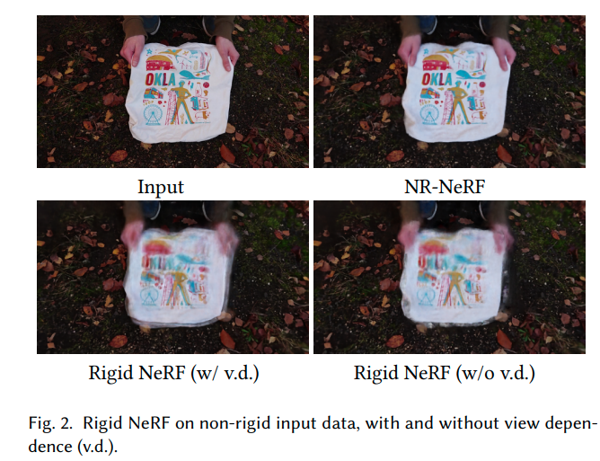
compositional

"GIRAFFE: Representing Scenes as Compositional Generative Neural Feature Fields"
[ arXiv2020 ] [paper] [[code]] [[web]] [ 
MPI, University of Tübingen ]
[ Michael Niemeyer, Andreas Geiger ]
[ abcd ]
Click to expand
-
review
- 用neural rendering “避开”了多物体lighting的显式建模
- Motivation
-
overview
- 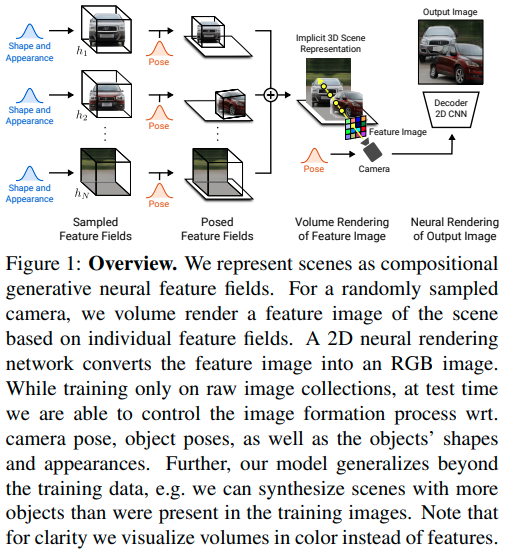
<OSF>"Object-Centric Neural Scene Rendering"
[ arXiv2020 ] [paper] [[code]] [web] [ 
Stanford ] [ 
Google ]
[ Michelle Guo, Alireza Fathi, Jiajun Wu, Thomas Funkhouser ]
[ object-centric neural scattering functions ]
Click to expand
-
review
- 相比于组成式，其实更关注多物体之间的Lighting
- 物体pose都是真值
-
Motivation
- 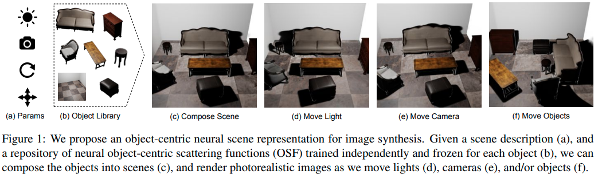
- OSF(object-centric neural scattering functions) models per-object light transport
- modeling dynamic scene：物体在移动/有无，光源在移动
-
Review
- 相比于GIRAFFE，把多物体的光照、反射等处理地很好了；GIRAFFE是用neural rendering逃避了显式地建模光照和多物体透射反射，这篇文章直面难题，类似Neural Reflectance Field
- 看上去物体位置、id都是真值，重点主要是建模好多物体的光照
-
Overview
- 数据集
- furniture-single
- furniture-random 25个动态的场景，每个包含多个物体的随机layout
- furniture-realisitc
- 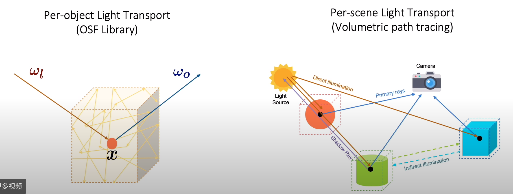
- 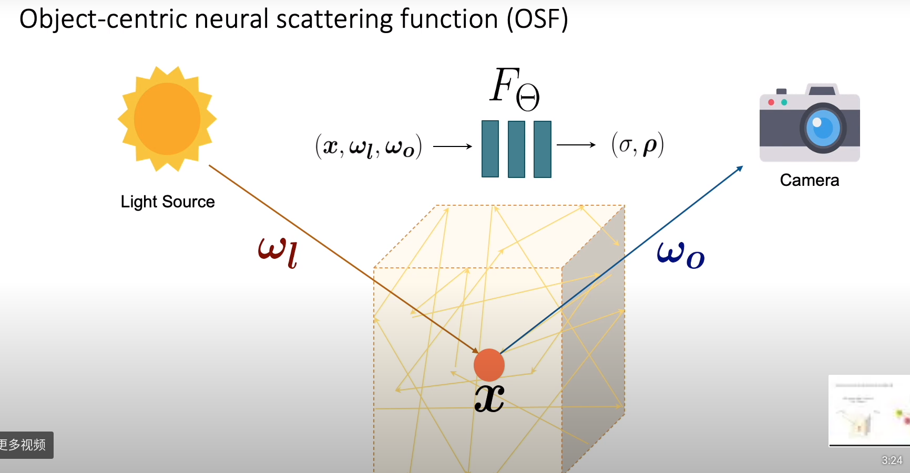
- 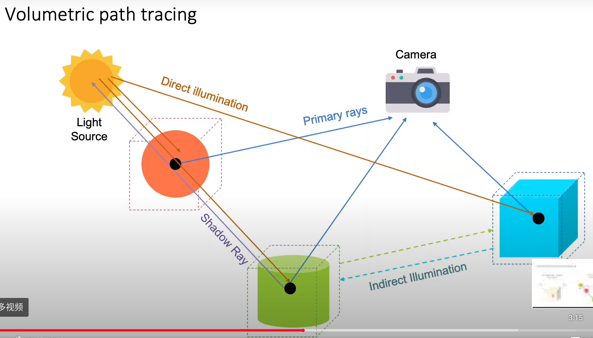
- 数据集
-
Ray Sampling
- 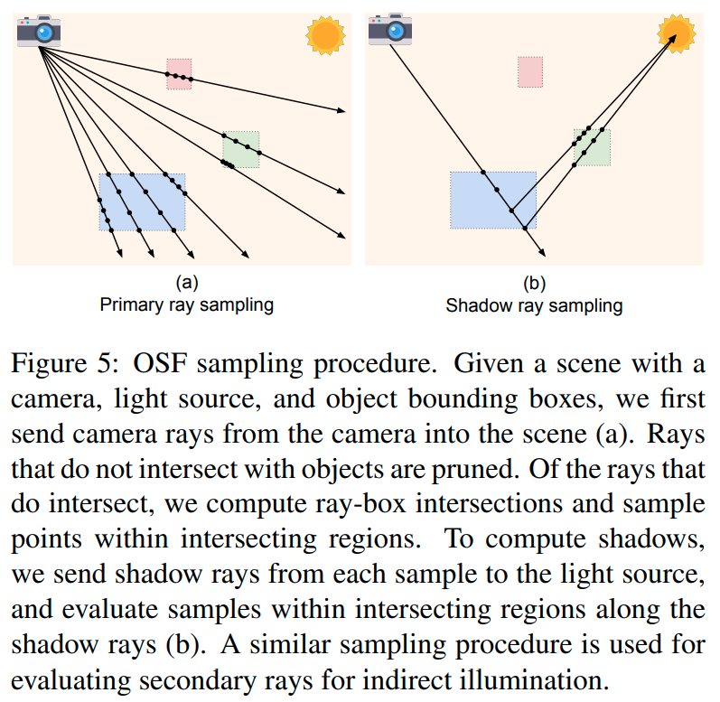
"Neural Scene Graphs for Dynamic Scenes"
[ CVPR2021 ] [paper] [supp] [[code]] [web] [ 
TUM, Princeton University ] [ 
Algolux ]
[ Julian Ost, Fahim Mannan, Nils Thuerey, Julian Knodt, Felix Heide ]
[ dynamic scenes, motion-clue ]
Click to expand
-
Motivation
- 主要是为了model dynamic scenes；graph是显式的graph
- 虽然是compositional的工作，但是是用到了motion clue的那种
- 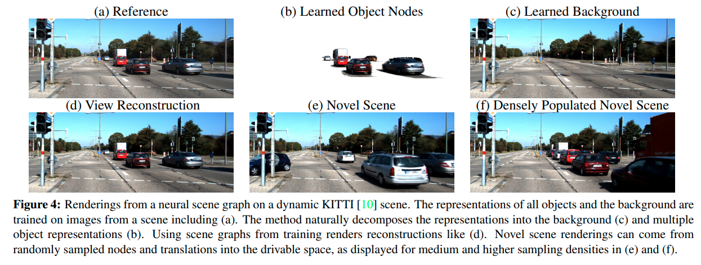
encoder
"GRF: LEARNING A GENERAL RADIANCE FIELD FOR 3D SCENE REPRESENTATION AND RENDERING"
[ ICLR2021 ] [paper] [code] [ 
Oxford ] [ 
company ]
[ Alex Trevithick, Bo Yang ]
[ encoder-decoder ]
Click to expand
-
Motivation
- NeRF + encoder-decoder结构
- 用一个 single forward pass infer出novel scene representations
- encoder输入：2D images + camera poses + intrinsics
- encoder输出：neural radiance fieilds
- 主要做法
- 为每一个light ray (pixel) 提取general features
- 把features重投影到query 3D point p上
- 然后从p的feature infer出RGB和volume density
- 关键在于：对于任意同一个点，从不同的角度看来的feature是始终一样的，因此不同view的这个点渲染出的RGB和volume density也会保持一致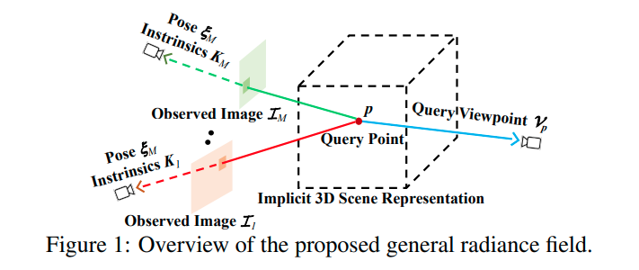
- 构成：四个部件，连接起来，端到端的训练
- 对每一个2D pixel的feature extractor
- 一个reprojector，从2D feature到3D空间
- 做了一个简单的假设：一个像素的feature，是对这个ray上的每一个点的描述
- 所以就是把一个query 3D point重投影到每一个输入view上，来从每一个输入view对应点的2D feature得到这个3D point的feature
- 如果重投影的点落在图像内，那就选最近邻的像素的feature
- 如果在图像外，就给一个零向量
- 一个aggregator，得到一个3D点的general features
- 这里的挑战性在于：Input images的长度是可变的，并且没有顺序；因此，通过reprojector获取到的2D features也是没有顺序、任意尺寸的
- 因此把这里定义为一个注意力聚集过程
- 一个neural renderer，来infer出那个点的外观和几何
"pixelNeRF: Neural Radiance Fields from One or Few Images"
[ CVPR2021 ] [paper] [web] [code] [ 
UCB ]
[ Alex Yu, Vickie Ye, Matthew Tancik, Angjoo Kanazawa ]
[ scene prior/category, CNN encoder ]
Click to expand
-
评价
- 和GRF思路类似；每个点除了空间坐标以外，还额外condition一个feature，这个feature来自于把这个点重投影到input view之后索引出的input view feature space下的feature
- 作者评价的与GRF的区别
- 本篇在view下操作，而不像GRF那样在canonical space下操作，因此本文方法可以适用于更一般的设定；
- 本文方法的效果更好（笔者注：从web 视频来看，在少量view输入合成任务下的效果非常好）
-
Motivation
- image-conditioned NeRF
-
To overcome the NeRF representation’s inability to share knowledge between scene
- 为了克服NeRF这样的表达不能在scene与scene之间保留/共享知识的问题（NeRF每次都要train from scratch）
- condition a NeRF on spatial image features
-
- 在训练时不需要一个一致的标准正视图坐标系

- image-conditioned NeRF
-
Main components
- 全卷积图像encoder E
- 把输入图像encode进入一个pixel aligned 特征grid
- NeRF 网络 f
- 给定一个空间位置、encoded feature（位于重投影后的在图片上的坐标）
- 输出color + density
- 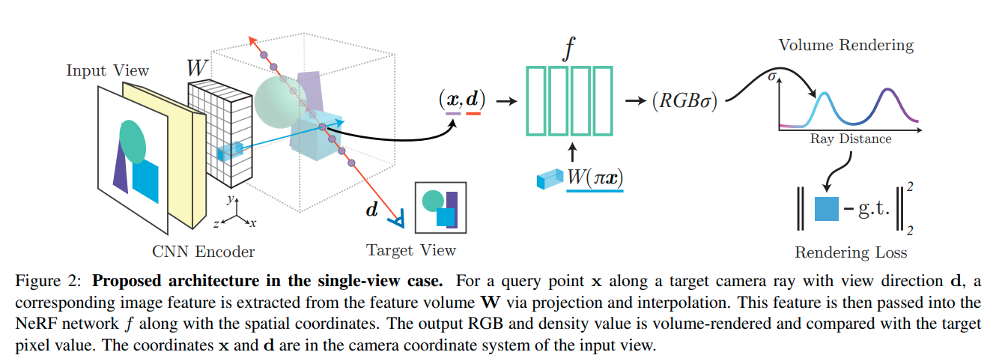
- 全卷积图像encoder E
- multi-view aggregation 方式：
- 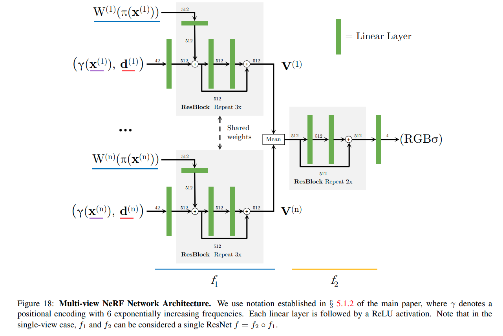
- 在任意一个query point，对任意一个view，把query point \(\boldsymbol{\rm x}, \boldsymbol{\rm d}\) 变换到input view space下
\(`\boldsymbol{\rm x}^{(i)}=\boldsymbol{\rm P}^{(i)}\boldsymbol{\rm x}`,\quad \boldsymbol{\rm d}^{(i)}=\boldsymbol{\rm R}^{(i)}\boldsymbol{\rm d}\) - 在任意一个query point，对任意一个view，从投影后的图像位置的feature + position embedding + view direction embedding 计算中间变量
\(\boldsymbol{\rm V}^{(i)}=f_1(\gamma(\boldsymbol{\rm x}^{(i)}), \boldsymbol{\rm d}^{(i)};\boldsymbol{\rm W}(\pi(\boldsymbol{\rm x}^{(i)})))\) - 在任意一个query point，对于所有view，把所有中间变量过average pooling layer \(\psi\)后再过一个网络渲染出\((\sigma, \boldsymbol{\rm c})\)
\((\sigma, \boldsymbol{\rm c})=f_2(\psi(\boldsymbol{\rm V}^{(1)},\ldots,\boldsymbol{\rm V}^{(n)}))\) - single view就是直接\((\sigma, \boldsymbol{\rm c})=f(\gamma(\boldsymbol{\rm x}),\boldsymbol{\rm d};\boldsymbol{\rm W}(\pi(\boldsymbol{\rm x})))\)
relighting
"NeRF in the Wild: Neural Radiance Fields for Unconstrained Photo Collections"
[ CVPR2021 ] [paper] [web] [ 
Google ]
[ Ricardo Martin-Brualla, Noha Radwan, Mehdi S. M. Sajjadi, Jonathan T. Barron, Alexey Dosovitskiy, Daniel Duckworth ]
[ abcd ]
Click to expand
- Motivation
"Neural Reflectance Fields for Appearance Acquisition"
[ 0000 ] [paper] [[code]] [ 
UCSD, UCB ] [ 
Adobe ]
[ Sai Bi, Zexiang Xu, Pratul Srinivasan, Ben Mildenhall, Kalyan Sunkavalli, Miloš Hašan, Yannick Hold-Geoffroy, David Kriegman, Ravi Ramamoorthi ]
[ abcd ]
Click to expand
- Motivation
"NeRV: Neural Reflectance and Visibility Fields for Relighting and View Synthesis"
[ arXiv2020 ] [paper] [[code]] [web] [ 
UCB, MIT ] [ 
Google ]
[ Pratul P. Srinivasan, Boyang Deng, Xiuming Zhang, Matthew Tancik, Ben Mildenhall, Jonathan T. Barron ]
[ abcd ]
Click to expand
- Motivation
"NeRD: Neural Reflectance Decomposition from Image Collections"
[ arXiv2020 ] [paper] [code] [web] [ 
University of Tübingen ] [ 
Google ]
[ Mark Boss, Raphael Braun, Varun Jampani, Jonathan T. Barron, Ce Liu, Hendrik P.A. Lensch ]
[ abcd ]
Click to expand
- Motivation
pose estimation
"iNeRF: Inverting Neural Radiance Fields for Pose Estimation"
[ arXiv2020 ] [paper] [[code]] [web] [ 
MIT ] [ 
Google ]
[ Lin Yen-Chen, Pete Florence, Jonathan T. Barron, Alberto Rodriguez, Phillip Isola, Tsung-Yi Lin ]
[ pose estimation ]
Click to expand
-
Motivation
-
Overview
- 就直接用像素的loss直接反向传播给pose
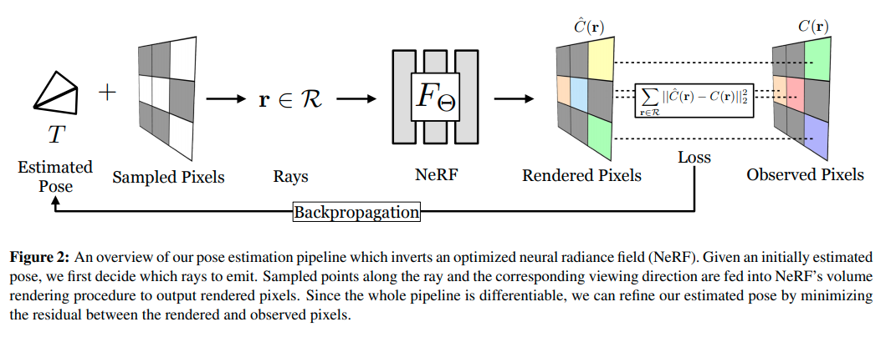 - 关键在于sample pixels时的sample策略
- pose参数化用的是exponential coordinates
- 就直接用像素的loss直接反向传播给pose

basics
"Fourier Features Let Networks Learn High Frequency Functions in Low Dimensional Domains"
[ NeurIPS2020 ] [paper] [code-unofficial-SIREN-modified] [ 
UCB, UCSD ] [ 
Google ]
[ Matthew Tancik, Pratul P. Srinivasan, Ben Mildenhall, Sara Fridovich-Keil, Nithin Raghavan, Utkarsh Singhal, Ravi Ramamoorthi, Jonathan T. Barron, Ren Ng ]
[ fourier features ]
Click to expand
-
Motivation
- 傅里叶特征可以改善coordinate-based MLP的低维高频回归任务
- 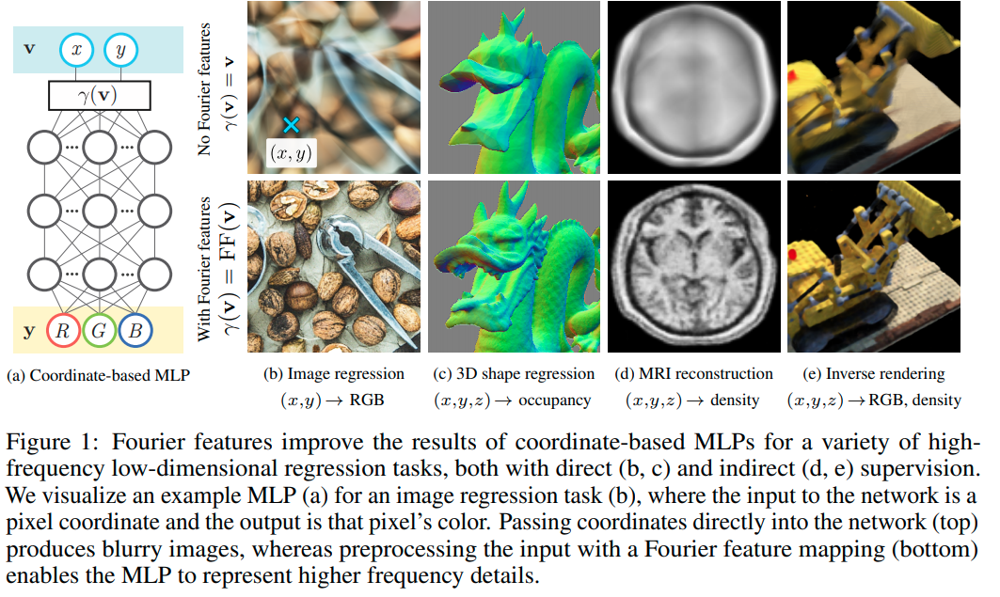